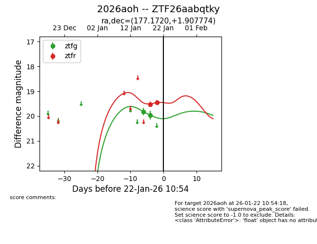
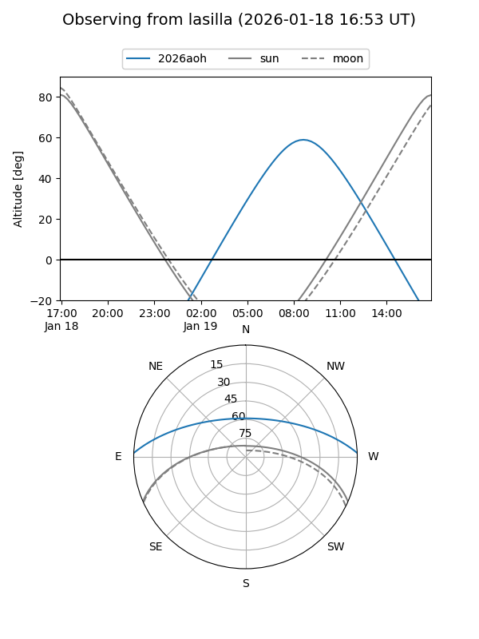
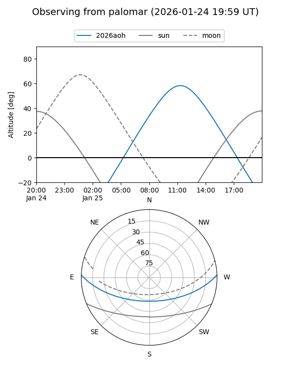
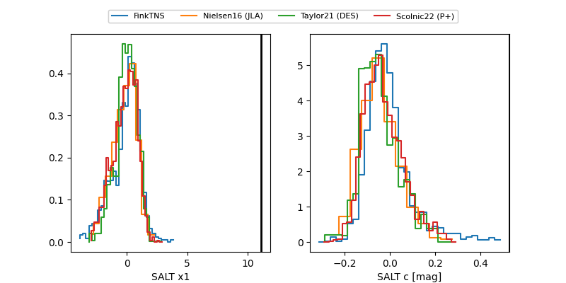

2026aoh
Target 2026aoh at 2026-01-18 13:05
Aliases and brokers:
FINK: link
Lasair: link
ALeRCE: link
TNS: link
YSE: link
alt names
ZTF26aabqtky (ztf,fink_ztf)
2026aoh (tns,yse)
Coordinates:
equatorial (ra, dec) = 177.1720,+1.90777
equatorial (HMS+DMS) = 11:48:41.29,+01:54:27.99
galactic (l, b) = (269.4861,+60.63833)
Flags:
Photometry:
last ztfg=19.96, ztfr=19.52
2 ztfg, 1 ztfr detections
Lightcurve

Visibility


Additional plots
